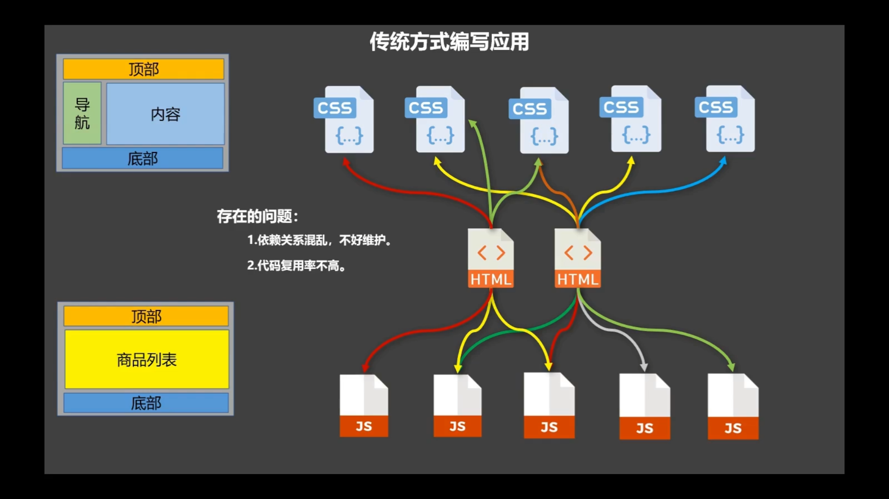
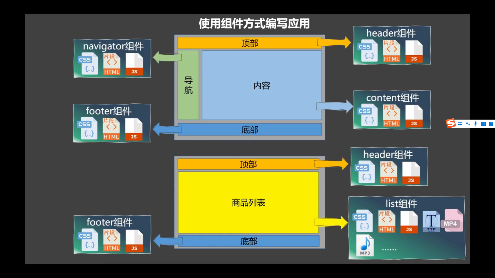
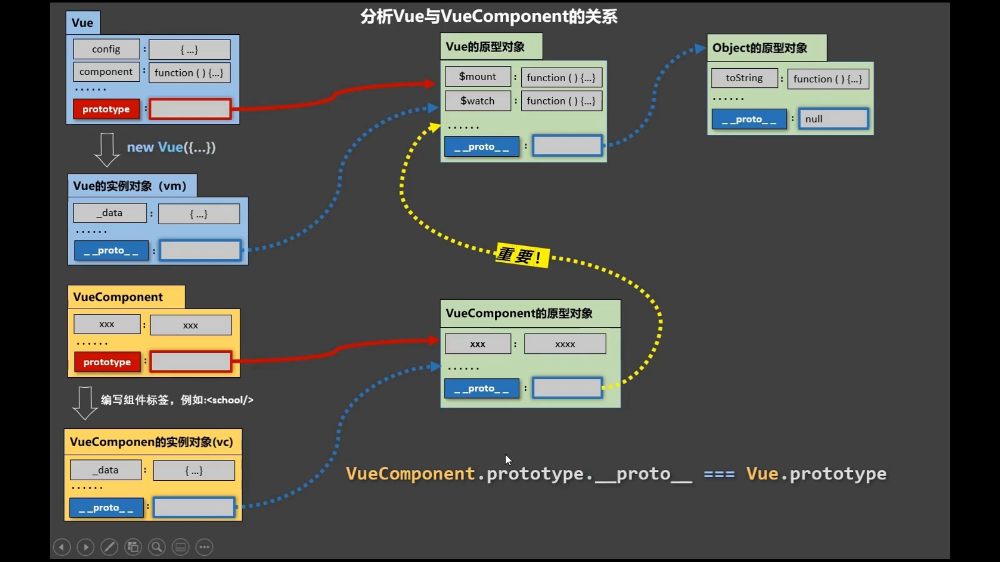

1. 组件
1.1 定义
组件的定义：实现应用中局部功能代码和资源的集合
作用：复用编码、简化项目编码、提高后台运行效率
| 传统方式编写应用 | 组件方式编写应用 |
|---|---|
|  |  |
1.2 组件化编程
- 单文件组件：一个文件中包含n个组件
- 单文件组件：一个文件只包含1个组件
1.3 使用步骤
- 定义组件
- 注册组件
- 使用组件（写组件标签）
使用Vue.extend(options)创建，其中options和new Vue(options)中传入的options几乎一样，但有点区别，区别如下：
el不要写，为什么？
最终所有的组件都要经过
vm的管理，由vm的el决定服务哪个容器data必须写成函数，为什么？
避免组件被复用时，数据存在引用关系
- 如何注册组件？
- 局部注册：
new Vue的时候传入components选项 - 全局注册：
Vue.component('组件名'，组件)
- 局部注册：
编写组件
1 2 3 4 5 6
第一种写法： <school></school> 第二种写法（脚手架必用） 注意：这种写法叫做自闭标签，推荐在脚手架中使用； 不使用脚手架时，自闭标签会导致后续组件不能渲染 <school/>
1 2 3 4
// 定义组件 const school = Vue.extend(options) 可简写为： const school = options
1
2
3
4
5
6
7
8
9
10
11
12
13
14
15
16
17
18
19
20
21
22
23
24
25
26
27
28
29
30
31
32
33
34
35
36
37
38
39
40
41
42
43
44
45
46
47
48
49
50
51
52
53
54
55
56
57
58
59
60
61
62
63
64
65
66
67
<body>
<div id="root1">
<!-- 第三步 编写组件标签 -->
<school></school>
<student></student>
</div>
<div id="root2">
<hello></hello>
</div>
</body>
<script src="./vue.js"></script>
<script type="text/javascript">
Vue.config.productionTip = false
// 第一步 创建组件
const school = Vue.extend({
template: `<div>学校： 地址： <button type="button"
@click="showSchoolName">点击出现学校名</button></div>`,
data() {
return {
schoolName: '尚硅谷',
address: '北京昌平'
}
},
methods: {
showSchoolName() {
alert(this.schoolName)
}
}
});
const student = Vue.extend({
template: `<div>学生： 年龄：</div>`,
data() {
return {
studentName: '张三',
age: '19'
}
}
});
const hello = Vue.extend({
template: `<div></div>`,
data() {
return {
msg: '你好啊'
}
}
})
// 第二步 全局注册
Vue.component('hello', hello)
//第二步 注册组件【局部】
new Vue({
el: '#root1',
components: {
school,
student
},
})
new Vue({
el: '#root2',
})
</script>
1.4 关于VueCompnent
school组件本质是一个名为VueComponent的构造函数，且不是程序员定义的，而是Vue.extend生成的【源码可查】我们只需要写
<school/>或者<school></school>,Vue解析时会帮我们创建school组件的实例对象，即vue帮我们执行的是1
new VueComponent(options)
特别注意：每次调用Vue.extend,返回的都是一个全新(New)的VueComponent！！！
关于this的指向
组件配置中：
data函数、methods中的函数、watch中的函数、computed中的函数，它们的this均是 【VueComponent实例对象】
new Vue()配置中：
data函数、methods中的函数、watch中的函数、computed中的函数，它们的this均是 【Vue实例对象】
VueComponent的实例对象，以后简称为
vc（组件实例对象）Vue实例对象，以后简称
vm
1.5 一个重要的内置关系
一个重要的内置关系：
VueComponent.prototype.__proto__ === Vue.prototype为什么要有这个关系?
让组件实例对象（vc)可以访问到Vue原型上的属性、方法。
函数 对应才有
prototype，实例对象有的是__prototype__。

1.6 单文件组件
Vue三大件
1
2
3
4
5
<template></template> 写结构
<script></script> 写交互
<style></style> 写样式
2.组件通信
1. ref属性
被用来给元素或子组件注册引用信息（id的替代者）
应用在html标签上获取的是真实的DOM元素，应用在标签上是组件实例对象
使用方式：
打标识
<h1 ref='xxx'> .....<h1>或者<School ref="xxx"><School>获取：
this.$refs.xxx
2. props属性(☆☆☆☆☆)
功能： 让组件接收外部传过来的数据
传递数据：
1
<Demo name="xxx"></Demo>
接收数据
1 2 3 4 5 6 7 8 9 10 11 12 13 14 15 16
//第一种方式（只接收） props：['name'] //第二种方式（限制类型） props:{ name:String }; //第三种方式（限制类型、限制必要性、指定默认值） props：{ name:{ type:string,//类型 required：true, //必要性,必须得传name属性 default:'老王' //默认值，如果必要性不满足，默认选择这个，一般不和required一起用 } }
备注：props是只读的，Vue底层会监测你对
props的修改，如果进行了修改，就会发出警告; 若业务需求确实需要修改，那么请复制props的内容到data中一份，然后修改data中的数据。
此处注意从外部传来值得顺序：
` 外部值 (如年龄age) —> props (age放到vc）—>data (age赋值到myage中 myage：age)—> methods (操作myage)`
功能：props广泛用于父子组件的传值，需要扎实掌握
3. mixin属性
混入功能：可以把多个组件公用的配置提取到一个混入对象中（一个js文件中）
1
2
3
4
5
6
7
//第一步：定义混合，例如
export const m = {
data(){...},
methods:{...},
....
};
1
2
3
4
5
6
//第二步:使用混入，例如
1. 全局混入 ： Vue.mixin(xxx)
//在main.js中配置,即vm中配置了mixin的属性,使得该vue项目中所有的组件都有了mixin中的属性
Vue.mixin(hunhe1);
Vue.mixin(hunhe2);
2. 局部混入 ： mixins:['xxx']
mixin.js
1
2
3
4
5
6
7
8
9
10
11
12
13
14
15
export const hunhe1 = {
methods:{
showName(){
alert(this.name)
}
}
}
export const hunhe2={
data(){
return {
x:100,
y:200
}
}
}
School.vue
1
2
3
4
5
6
7
8
9
10
11
12
13
14
15
16
17
18
19
20
<template>
<div>
<h2 @click="showName">学校名称： </h2>
<h2>学校地址：</h2>
</div>
</template>
<script>
import {hunhe1,hunhe2} from "mixin.js"
export default{
name:"School",
data(){
name:"shangguigu",
adress:'beijing',
x:666
},
// 引入后，该组件就具有了showName方法
// 引入了新的x，y值，由于原组件有x值，所以以原组件为主，x值为666
mixin:[hunhe1,hunhe2]
}
</script>
4. 插件
插件功能：用于增强Vue功能
本质：包含install方法的一个对象，install的第一个参数---Vue,第二个参数---插件使用者传递的数据
插件在Vue中应用比较广泛，在使用第三方插件，如elementUI等
plugins.js
1
2
3
4
5
6
7
8
9
10
11
12
13
14
15
16
17
18
19
20
21
22
// 定义插件
export default{
install(Vue) = function (Vue,options){
// 1.添加全局过滤器
Vue.filter("myfilter",function(value){
return value.slice(0,4) // 过滤器保留四位有效数字
});
// 2.添加全局指令
//自定义v-fbind指令,指令与元素成功绑定时
Vue.directive("fbind",{
bind(element,binding){
element.value = binding.value
}
})
// 3.配置全局混入
Vue.mixin(...)
// 4. 添加实例方法(给vue原型上添加方法，vm和vc都能用)
Vue.prototype.$myMethod = function (){...}
Vue.prototype.$myPrototype = xxx
}
}
main.js
1
2
3
// 使用插件,plugin.js
import plugins from 'plugins.js'
Vue.use(plugins)
Student.vue
1
2
3
4
5
6
7
8
9
10
11
12
13
14
15
16
17
18
19
20
21
22
23
<template>
<div>
<h2>
学生姓名：
</h2>
<h2>
学生性别：
</h2>
<input type="text" v-fbind:value="name">
</div>
</template>
<script>
export default{
name:'Student',
data(){
return{
name:'张三',
sex:'男'
}
}
}
</script>
5. scoped属性
作用：让样式在局部生效，防止冲突
写法 <style scoped>
1
2
3
4
5
6
7
<template></template>
<script></script>
<style scoped>
</style>